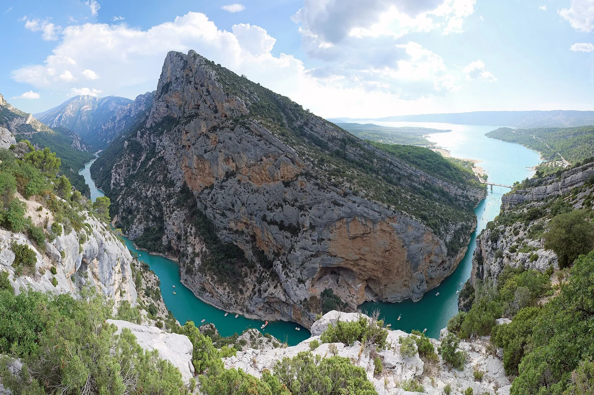

Gorges du Verdon
Lac de Sainte-Croix, France · kayak, paddle

Canyon turquoise spectaculaire : on remonte les gorges en paddle ou en kayak depuis le lac de Sainte-Croix.
- Lieu
- Lac de Sainte-Croix, France
- Niveau
- Débutant
- Activités
- kayak, paddle
- Type d'eau
- inland
- Coordonnées
- 43.76, 6.22 (position approximative du secteur)
Dangers à connaître
- Forte chaleur, peu d’ombre.
- Affluence l’été, location limitée.
- La navigation dans les gorges est interdite quand le vent dépasse 28 km/h.
Le conseil d'Ocean Buddy
Loue tôt le matin, les embarcations partent vite l’été. Le gilet de sauvetage ou une combinaison assurant la flottaison est obligatoire (règle du Parc).
Ouvrir dans Ocean Buddy Télécharger sur l'App Store
Source : Description historique Ocean Buddy · vérification externe en attente.